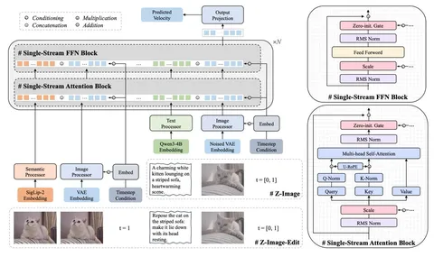

Продолжаем разбирать большую статью о новой генеративной модели Z-Image. В первой части поговорили о пайплайне подготовки данных, во второй — о тонкостях обучения. А сегодня обсудим архитектуру модели и её обучение.
Авторы используют два картиночных энкодера: SigLIP2 и Flux-VAE и один текстовый — Qwen3-4B. Трансформер мультимодальный, диффузионный, Single-Stream. 3D-RoPE стандартное, не такое хитрое, как в Qwen Image.
Рассмотреть архитектуру модели во всех подробностях можно на схеме. Она довольно стандартная: состоит из Attention- и FFN-блоков c Gate и Scale. В кондишн из Scale-/ Gate-слоёв прокидывается только время.
На вход в диффузионную модель как обычно поступают латентны и эмбеддинги промпта. Эмбеддинги конкатенируются вдоль длины последовательности. В editing-режиме на вход также попадают эмбеддинги исходных изображений, полученные из двух картиночных энкодеров, — они также конкатенируются со всем остальным. То есть, на вход Z-Image подаётся вся информация, которая есть в запросе.
Говоря об обучении, хочется отметить несколько интересных особенностей. Претрейн начинается с text-to-image на изображениях низкого разрешения — 256х256. Так модель учат в общих чертах понимать, как устроены картинки. Авторы утверждают, что на эту стадию уходит почти половина времени: скорее всего, именно это сделало маленькую модель такой эффективной.
Далее следует omni-часть предобучения: к исходному датасету добавляют изображения произвольного разрешения, editing-данные и различные виды caption’ов.
После этого — SFT-стадия, где авторы стараются сбалансировать концепты. В процессе обучения для каждого из концептов фиксируется статистика его появлений в батчах. Веса картинок, представляющих разные концепты, перевзвешиваются при сборе следующего батча. Так модель изучает концепты более равномерно.
Для стабилизации модели ей устраивают несколько SFT-стадий, во время каждой из которых перебалансируют концепты в датасетах. Потом веса полученных моделей усредняют.
Потом модель дистиллируют при помощи модифицированного DMD, который авторы называют decoupled DMD. От оригинального он отличается тем, что стадии CFG-Augmentation и Distribution matching’а разделяют и оптимизируют отдельно.
В конце модель дообучают при помощи DPO и GRPO для максимального соответствия человеческим ожиданиям.
Проверенные решения в нетипичных комбинациях позволяют Z-Image показывать хорошие результаты при небольших затратах вычислительных мощностей. Познакомиться с моделью поближе можно на GitHub или HuggingFace.
Разбор подготовил
CV Time
